shmap-rs profiling charts
Result set current · metric Containment ·
-@1. Regenerate with python3 benchmarks/charts.py.
Chain: shmap -x → run.py →
profiles.tsv → charts.py → these files.
Time pies are CPU-seconds summed across threads, never wall-clock.
 chart-B01-mapq.svg
chart-B01-mapq.svg
 chart-B01-pruning.svg
chart-B01-pruning.svg
 chart-B01-refine-memo.svg
chart-B01-refine-memo.svg
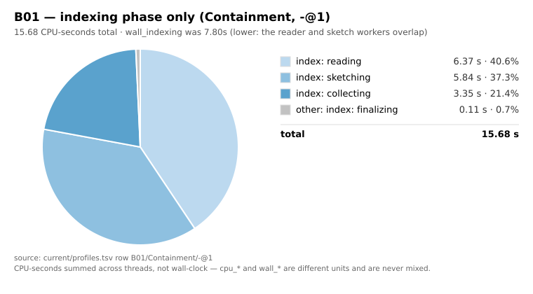
chart-B01-time-indexing.svg
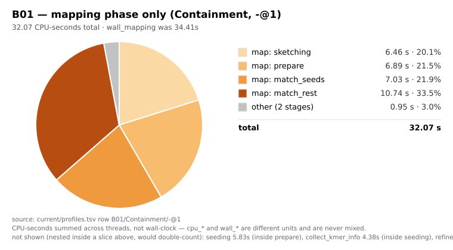
chart-B01-time-mapping.svg
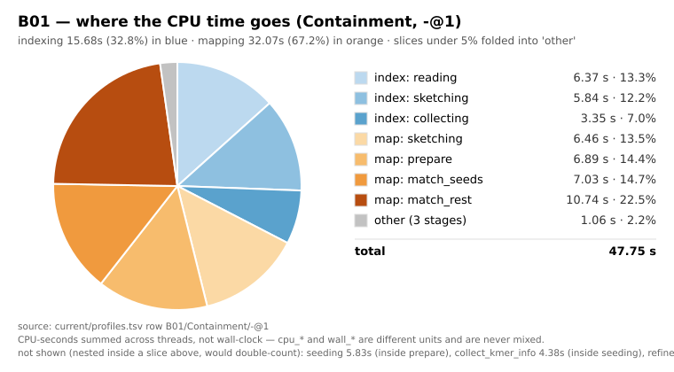
chart-B01-time.svg
 chart-B02-mapq.svg
chart-B02-mapq.svg
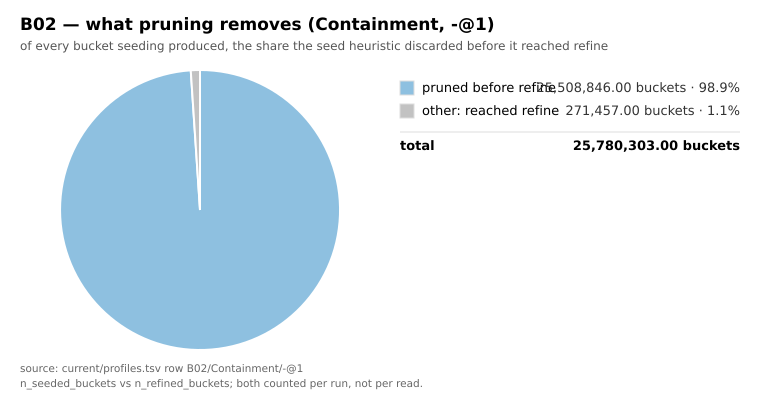
chart-B02-pruning.svg
 chart-B02-refine-memo.svg
chart-B02-refine-memo.svg
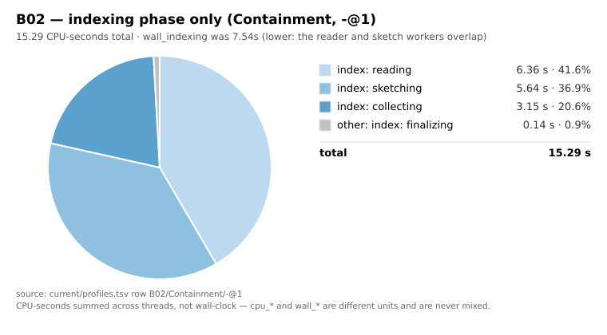
chart-B02-time-indexing.svg
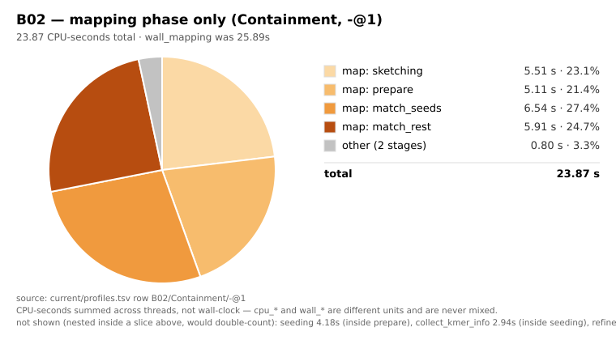
chart-B02-time-mapping.svg
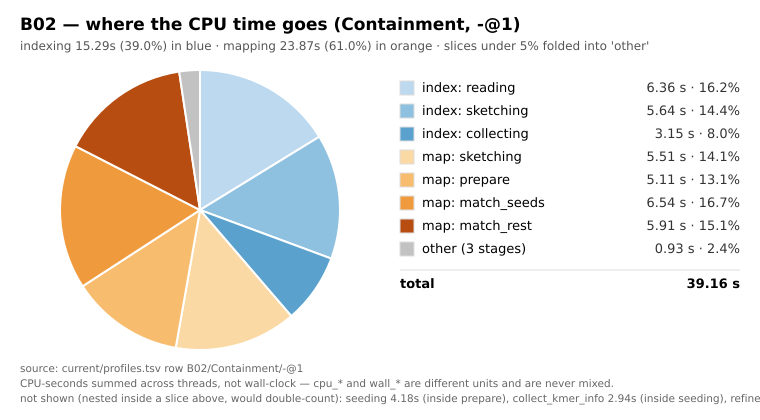
chart-B02-time.svg
chart-B03-mapq.svg
chart-B03-pruning.svg
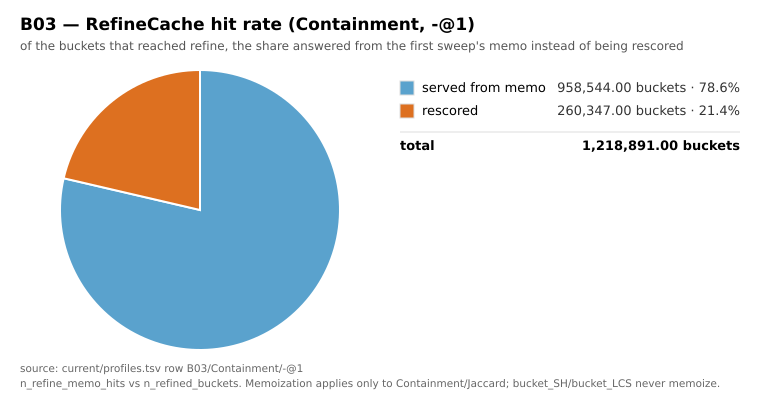
chart-B03-refine-memo.svg
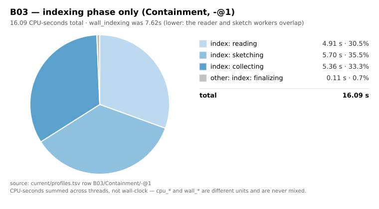
chart-B03-time-indexing.svg
chart-B03-time-mapping.svg
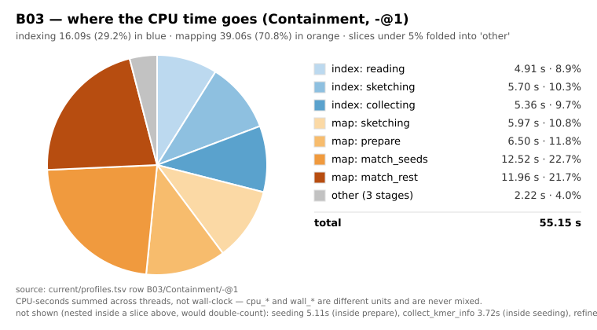
chart-B03-time.svg
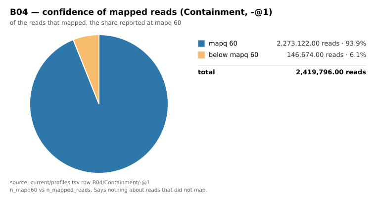
chart-B04-mapq.svg
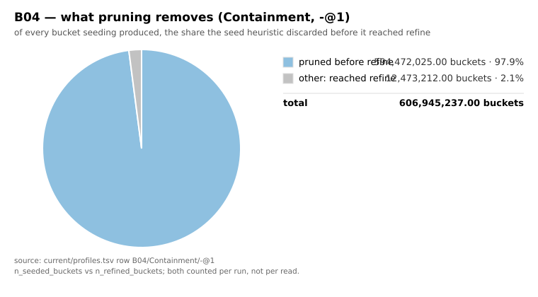
chart-B04-pruning.svg
chart-B04-refine-memo.svg
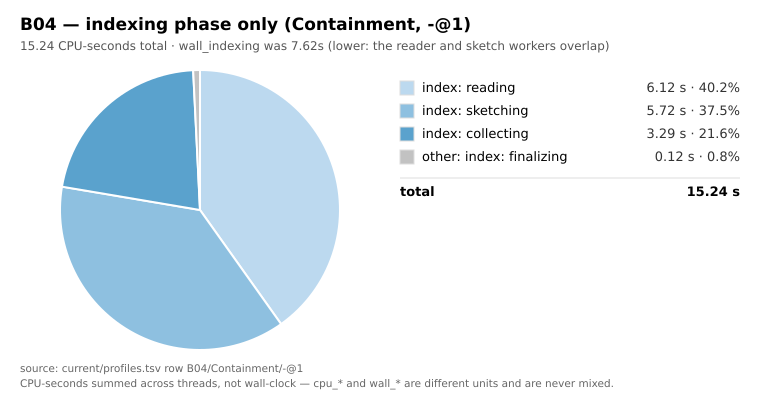
chart-B04-time-indexing.svg
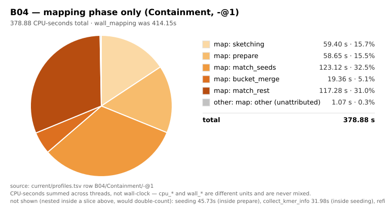
chart-B04-time-mapping.svg
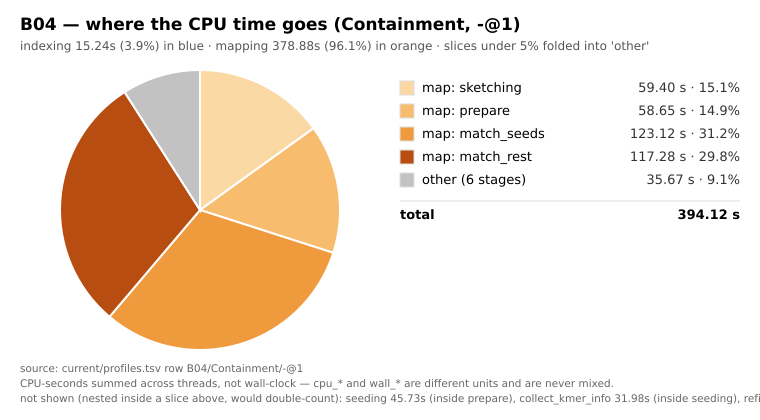
chart-B04-time.svg
 chart-B05-mapq.svg
chart-B05-mapq.svg
 chart-B05-pruning.svg
chart-B05-refine-memo.svg
chart-B05-pruning.svg
chart-B05-refine-memo.svg
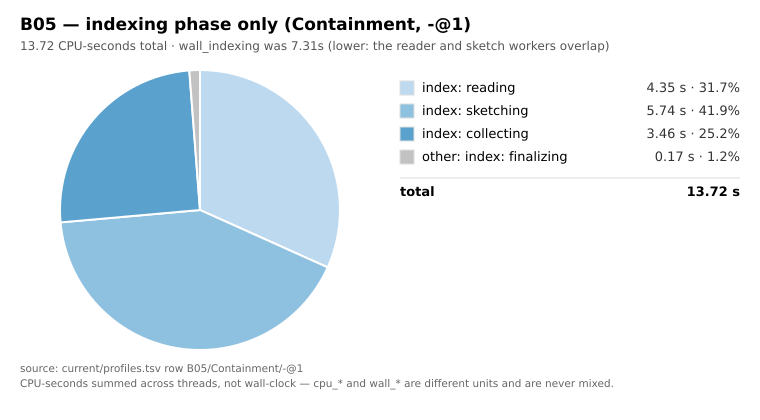
chart-B05-time-indexing.svg
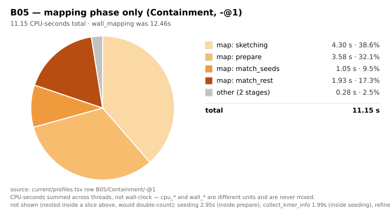
chart-B05-time-mapping.svg
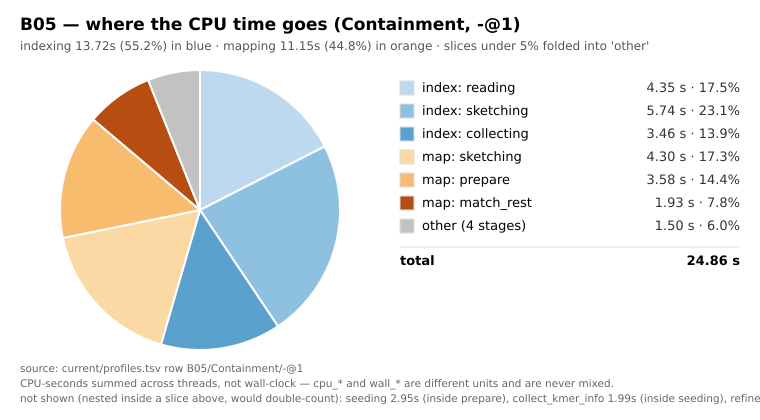
chart-B05-time.svg